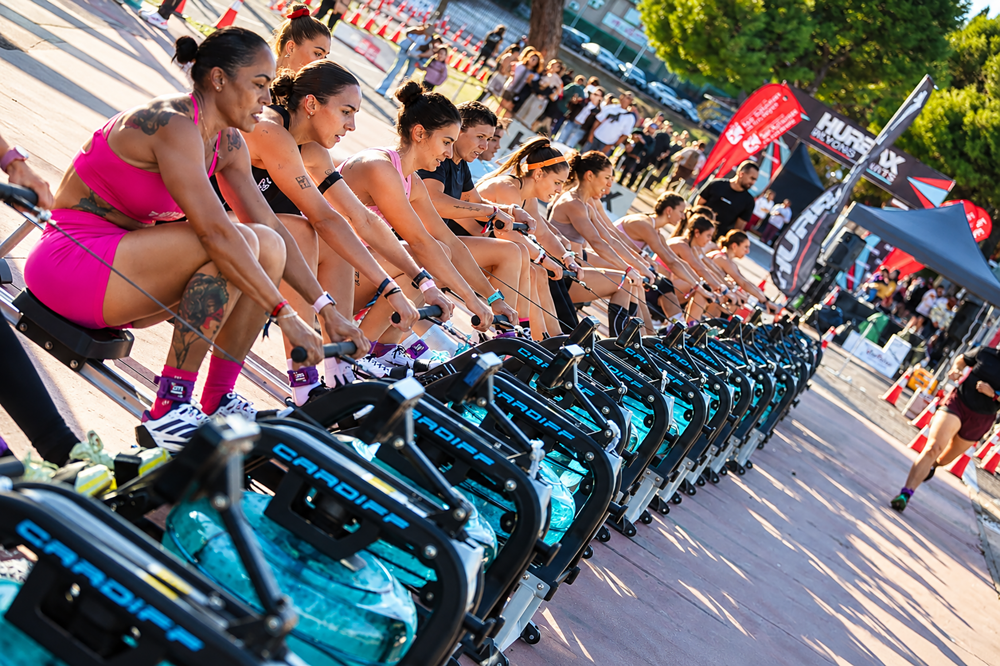
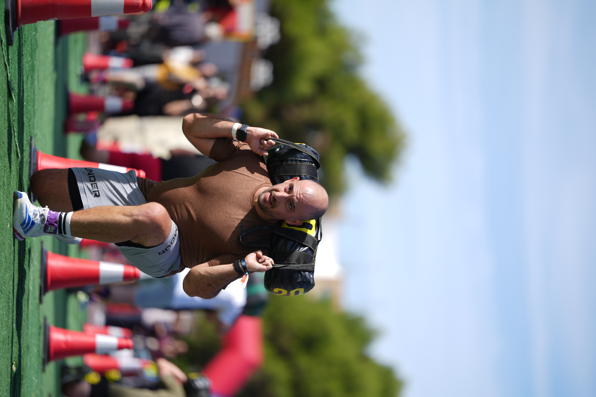

HURBAX Madrid staged its 2026 national final on 24 October at the Recinto Ferial in San Sebastián de los Reyes. Individual athletes, pairs and teams of four combined five one-kilometre running segments with five functional workouts.
The stations demanded 1,000 metres of rowing, 100 wall balls, 100 metres of sandbag lunges, a 200-metre farmers carry and 80 metres of burpee broad jumps. Qualifiers arrived through the season ranking, but the final began from zero.
A national final built around pace and strength
Image Media's three selected photographs show the breadth of the Madrid competition: the opening run, athletes working together across a long row of machines and the concentration required during the sandbag lunges.


Champions decided in Madrid
José Ángel Hidalgo Izquierdo won the men's individual title in 35:22, while Patricie Viadel Turjanicová led the women's individual classification in 36:51. Satélites 37 Box Team won the men's pairs, FuriaEsmeralda the women's pairs and ANRU TEAM the mixed pairs.
Escuela Naval Militar topped the mixed team classification. Across the categories, the final converted the season's qualifying work into a single championship test of speed, strength and consistency.
Eduardo Castro, Michael Rosa, Luis Moreira, Sergio Mendes and Lucas Menezes formed the Image Media coverage team. The photographs selected for this report are credited individually from the supplied filenames.
Image Media coverage
Reporting: IM News Editorial Desk
Coverage photographers: Eduardo Castro, Michael Rosa, Luis Moreira, Sergio Mendes and Lucas Menezes / Image Media
Sources: official HURBAX Madrid event information, regulations and results.